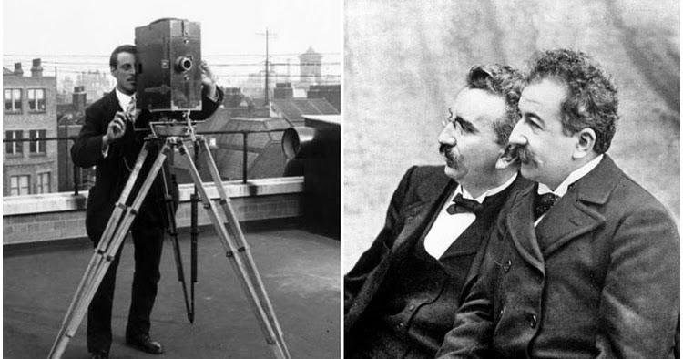

Развитие кинематографа
История кино начинается в конце 19 века с изобретения кинематографа братьями Люмьер. С тех пор кино прошло долгий путь развития от немого черно-белого кино до современных цифровых технологий. Каждый этап развития кинематографа приносил новые технические достижения и художественные открытия.

Ранние годы (1890-1920)
Первые фильмы были короткими, без звука и часто показывали простые сцены из повседневной жизни. Постепенно стали появляться повествовательные фильмы с сюжетом. В этот период сформировались основные принципы монтажа и киноповествования. Пионеры кинематографа, такие как Жорж Мельес, экспериментировали со спецэффектами и создавали фантастические сюжеты. Немое кино развило уникальный визуальный язык, где мимика и жесты актеров передавали эмоции и смысл происходящего на экране.
Золотой век Голливуда (1930-1950)
Этот период характеризуется расцветом студийной системы, появлением звукового кино и цветных фильмов. Голливуд стал мировой столицей киноиндустрии. Студии разработали систему контрактов с актерами, создавая "звездную систему". Появились такие легендарные студии как MGM, Paramount, Warner Bros., которые производили сотни фильмов ежегодно. Этот период подарил миру классические мюзиклы, фильмы-нуар и вестерны, которые до сих пор считаются эталонами кинематографа.
Новая волна и независимое кино (1960-1980)
В ответ на коммерциализацию Голливуда в Европе возникли новые кинематографические движения. Французская новая волна, итальянский неореализм и другие направления принесли свежий взгляд на киноискусство. Режиссеры начали экспериментировать с повествовательными структурами, использованием натуральных локаций и импровизацией. Этот период также ознаменовался появлением нового поколения американских режиссеров, таких как Мартин Скорсезе и Фрэнсис Форд Коппола.
Цифровая революция (1990-настоящее время)
С развитием компьютерных технологий кино претерпело радикальные изменения. Появление CGI (computer-generated imagery) позволило создавать реалистичные спецэффекты и полностью цифровые персонажи. Цифровые камеры заменили пленочные, что сделало процесс съемки более доступным. Интернет и стриминговые платформы изменили способы дистрибуции и потребления кино. Современные технологии, такие как виртуальная реальность и искусственный интеллект, продолжают расширять границы кинематографического искусства.